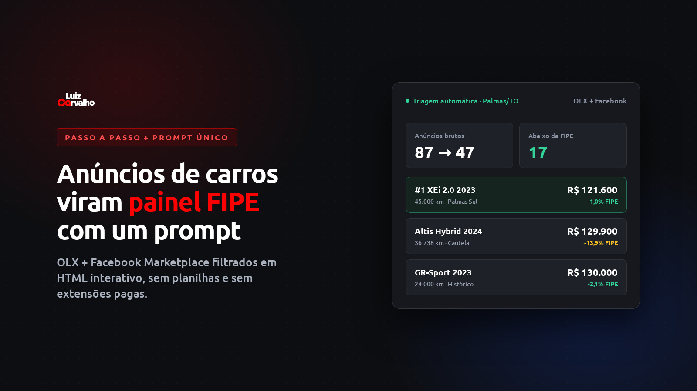

Como analisar dezenas de anúncios da OLX e do Facebook com IA?
Você pode analisar dezenas de anúncios da OLX e do Facebook Marketplace em minutos. Basta salvar o HTML das duas buscas numa pasta e rodar um único prompt. Primeiro, abra as buscas no navegador com os filtros da sua cidade. Em seguida, copie o bloco da lista de resultados pelo menu Inspecionar e salve em arquivos de texto. Depois, abra uma IA com acesso à pasta e cole o prompt pronto deste guia. Ele manda a IA extrair título, preço, quilometragem, ano, versão e link de cada carro. Além disso, o comando filtra modelos errados e armadilhas de boleto, consulta a Tabela FIPE e identifica anúncios duplicados. Por fim, ele gera um painel interativo em HTML com gráfico, filtros e comparador lado a lado. Como resultado, você troca dezenas de abas abertas por uma lista ordenada do melhor negócio ao pior.
Eu precisei pesquisar um Toyota Corolla Sedan 2023 ou mais novo para comprar em Palmas, no Tocantins. Quem já procurou carro usado conhece o cansaço. Você abre a OLX, abre o Facebook Marketplace e começa a clicar em anúncio atrás de anúncio.
No entanto, metade dos resultados vem misturada. Aparece SUV no meio da busca por sedã, carro mais velho, anúncio duplicado e oferta de financiamento disfarçada de preço à vista. Além disso, você ainda precisa conferir a Tabela FIPE de cada versão em outra aba.
Por isso, decidi fazer diferente. Em vez de comparar tudo no olho, salvei o HTML das duas buscas numa pasta e pedi para a IA fazer a triagem completa. O resultado foi tão prático que resolvi compartilhar aqui o passo a passo e o prompt pronto.
Por que copiar o HTML manualmente funciona melhor que robôs?
Copie o HTML manualmente porque os grandes portais bloqueiam robôs de raspagem e o Facebook Marketplace exige sessão logada para mostrar carros perto de você. Quando você mesmo faz a busca no navegador, já aplica localização, raio e faixa de ano em segundos. Depois, copiar o elemento da lista pelo DevTools leva menos de um minuto e entrega tudo limpo em texto puro. Como resultado, você não depende de extensões suspeitas nem paga por ferramentas externas. Além disso, o arquivo salvo guarda detalhes que passariam batido na correria, como anúncios que você já favoritou ou carros com preço reduzido recentemente. A partir daí, a IA faz o trabalho pesado de leitura, limpeza e cálculo. Você fica apenas com a parte humana: analisar o ranking gerado, mandar mensagem para os vendedores certos e fazer a vistoria presencial.
O que aconteceu na minha busca real em Palmas
Eu salvei exatamente dois arquivos na pasta: um da OLX, com 50 anúncios, e outro do Facebook Marketplace, com 37. Ao todo, eram 87 anúncios brutos para conferir.
Em seguida, a IA leu os dois arquivos e aplicou os filtros de carroceria e ano. Como resultado, ela descartou 40 anúncios fora do perfil sem perder o registro de nenhum deles. Eram 23 Corolla Cross SUV, 16 carros anteriores a 2023 e 1 anúncio de entrada com parcelas via boleto.
Além disso, a triagem pegou detalhes que passam despercebido na pressa. Um Corolla Cross estava cadastrado como Sedã na OLX. Outros dois anúncios eram do mesmo carro híbrido em Palmas, mas com R$ 1.090 de diferença entre eles. Por fim, sobraram 47 oportunidades válidas, sendo 17 abaixo da FIPE.
Passo a passo: como fazer o seu relatório do zero
- Crie uma pasta vazia no computador. Por exemplo, crie uma pasta chamada
pesquisa-carrona sua área de trabalho ou nos seus documentos. - Faça a busca normal no navegador. Abra a OLX e o Facebook Marketplace, escolha sua cidade e aplique o filtro de modelo e ano. Role a página até carregar os anúncios que quer comparar.
- Copie o HTML da lista de resultados. Aperte
F12no Chrome ou no Edge (ou clique com o botão direito sobre um anúncio e escolha Inspecionar). Na aba Elements, suba o mouse pelas linhas até destacar o bloco que envolve toda a grade de anúncios. - Salve o código copiado em arquivos de texto. Clique com o botão direito no
bloco marcado, vá em Copy e depois em Copy outerHTML. Cole o conteúdo no
Bloco de Notas e salve na pasta como
olx.txtefacebook.txt. - Abra sua IA dentro dessa pasta. Rode o Claude Code, Codex CLI, Gemini CLI, Antigravity ou Cursor na pasta onde os arquivos estão salvos.
- Cole o prompt abaixo e ajuste os critérios. Troque apenas as cinco linhas
iniciais do prompt para o seu carro, cidade e ano mínimo. Depois disso, a IA gera o arquivo
relatorio-oportunidades.htmlpronto para abrir no navegador.
Dica na hora de copiar o HTML no Facebook e na OLX
Na OLX, procure o container com a classe olx-adcard e suba um nível até a
div que agrupa todos os cards. Já no Facebook Marketplace, procure o bloco com
aria-label="Coleção de artigos do Marketplace". Assim, você copia apenas a
lista útil e deixa o arquivo leve.
O prompt único: copie, ajuste os critérios e rode
O comando abaixo é auto-contido e não depende de nenhuma extensão nem de outro arquivo auxiliar. Primeiro, edite o bloco MEUS CRITÉRIOS DE BUSCA no topo. Em seguida, cole o bloco inteiro na sua IA.
Você é um analista de dados automotivos e desenvolvedor front-end sênior. Sua tarefa é ler os arquivos HTML ou TXT salvos nesta pasta (vindos da OLX, Facebook Marketplace ou outros portais), cruzar cada anúncio com a Tabela FIPE e gerar um painel interativo de oportunidades em um único arquivo HTML.
════════════════════════════════════
MEUS CRITÉRIOS DE BUSCA (EDITE AQUI)
════════════════════════════════════
- Modelo desejado: Toyota Corolla Sedan
- O que excluir obrigatoriamente: Corolla Cross (SUV), mesmo quando cadastrado errado como Sedã, além de anúncios de repasse, ágio ou entrada + parcelas via boleto
- Ano mínimo: 2023 em diante (2023, 2024, 2025, 2026)
- Minha cidade e raio de preferência: Palmas, TO (priorizar Palmas e cidades até ~60 km como Porto Nacional e Paraíso do Tocantins; listar o restante do estado com etiqueta de distância)
- Nome do arquivo final: relatorio-oportunidades.html
════════════════════════════════════
ETAPA 1 — EXTRAÇÃO E AUDITORIA DOS DADOS
════════════════════════════════════
1. Leia todos os arquivos de busca salvos na pasta atual (HTML bruto copiado do navegador ou TXT).
2. Para cada anúncio encontrado, extraia sempre que existir no card:
- ID único (ex.: OLX-0, FB-0), plataforma de origem e link direto do anúncio
- Título, ano do modelo, versão exata (ex.: GLi, XEi, Altis Hybrid, GR-Sport), motor e cor
- Preço atual e preço anterior riscado (para destacar reduções de preço)
- Quilometragem, cidade/bairro e data de publicação
- Sinais importantes: se está marcado como favorito no HTML, selos como "Histórico Veicular" ou "Aceita trocas", se é de locadora (ex.: Localiza, Movida, Unidas) e avaliação da loja
- URL da imagem de capa (com fallback elegante caso expire)
3. Aplique os filtros com rigor:
- Separe os anúncios válidos daqueles que devem ser excluídos (modelo errado, ano abaixo do mínimo, financiamento disfarçado de preço à vista).
- Nunca descarte os excluídos em silêncio: guarde todos em uma lista auditável com o motivo exato da exclusão.
4. Pesquise os valores médios atualizados da Tabela FIPE para cada combinação de ano e versão encontrada nos anúncios válidos.
5. Para cada anúncio válido, calcule:
- Diferença em reais e em percentual frente à FIPE
- Possíveis duplicidades entre plataformas (mesmo carro, cor, cidade e km/preço parecidos na OLX e no Facebook)
- Alertas automáticos: "Cautelar obrigatória" quando o desconto passar de 10% abaixo da FIPE, "Km alta" acima de 90.000 km, "Ex-locadora" e "Card genérico sem versão/km" (comum no Facebook)
- Um Score de Oportunidade transparente (0 a 100) combinando desconto sobre a FIPE, quilometragem relativa ao ano, proximidade da minha cidade, redução recente de preço e histórico veicular.
════════════════════════════════════
ETAPA 2 — PAINEL INTERATIVO EM HTML ÚNICO
════════════════════════════════════
Gere o arquivo final em um único HTML auto-contido (HTML + CSS + JavaScript no mesmo arquivo, funcionando ao abrir direto no navegador, sem precisar de servidor ou build).
Siga exatamente este padrão visual e funcional:
1. ESTÉTICA MODERNA, CLEAN, FLAT E SOFISTICADA:
- Paleta clara arquitetural: fundo branco (#ffffff), superfícies neutras (#f4f5f7), texto principal grafite escuro (#111111), texto secundário (#666c78), bordas finas de 1px sem sombras pesadas e um único acento azul cobalto (#1a4be0) para ações, com verde (#0f7a4a) para abaixo da FIPE e âmbar (#b45309) para alertas de cautelar.
- Um bloco de destaque em alto contraste escuro (#111111) no topo (Spotlight) mostrando o #1 em compra segura e o maior desconto da pesquisa.
- Tipografia moderna com números tabulares (Chivo + Chivo Mono via Google Fonts, com fallback para fontes do sistema).
- Micro-animações discretas e sofisticadas: entrada escalonada do título, contagem progressiva dos indicadores principais no carregamento, abas com indicador deslizante suave, zoom sutil da foto dentro do card no hover e respeito a prefers-reduced-motion.
2. SEÇÕES OBRIGATÓRIAS DO PAINEL:
- Barra fixa superior com atalhos para as seções e botão "Exportar CSV" dos anúncios filtrados.
- Cabeçalho com resumo do funil (total analisado -> excluídos -> válidos -> quantos na cidade-alvo) + Spotlight escuro com os 2 carros principais.
- Faixa de 4 KPIs principais (anúncios válidos, oferta local, abaixo da FIPE e melhor referência de baixa km).
- Painel analítico em 2 colunas:
a) Gráfico interativo em SVG de Preço x Quilometragem, com legenda clicável para ligar/desligar anos, linha de referência da FIPE, mira dinâmica (crosshair) e tooltip ao passar o mouse, além de clique para abrir o anúncio.
b) Painel de auditoria com 3 abas: Favoritos & Duplicidades detectadas, Tabela FIPE usada como base e Distribuição por cidade.
- Grade de Oportunidades Prioritárias filtrável por estratégia (Todas, Compra segura, Desconto forte, Seminovos recentes), com barra visual mostrando a posição do preço frente à FIPE e botão "+ Comparar".
- Tabela completa interativa com todos os anúncios válidos: busca por texto, filtros (plataforma, localização, ano, versão, abaixo da FIPE, preço reduzido, favoritos), ordenação ao clicar nas colunas e botão "+" para comparar.
- Comparador lado a lado (até 3 veículos): barra flutuante no rodapé ao selecionar carros e modal comparando preço, FIPE, diferença %, km, versão, local e score.
- Roteiro prático de visitas e checagem (vistoria cautelar, revisão em concessionária, Detran e argumentos de negociação usando os concorrentes mais baratos da própria lista).
- Acordeão recolhível ao final listando todos os anúncios excluídos e seus motivos.
3. REGRAS DE PRECISÃO:
- Todos os números, links, títulos, cidades e contagens no HTML devem vir exclusivamente dos dados extraídos dos arquivos da pasta e da consulta FIPE. Não invente anúncios, preços ou atributos ausentes.
- Antes de finalizar, valide a sintaxe do JavaScript gerado e confirme que não há tags ou placeholders quebrados.Você também pode incluir resultados da Webmotors ou do iCarros. Para isso,
copie a grade de cards da página e salve em outro arquivo .txt na mesma pasta.
O que o painel HTML entrega no final
Em vez de uma resposta longa de texto no chat, o prompt gera um arquivo HTML único que abre direto no navegador. Primeiro, ele traz um resumo do funil com quantos anúncios foram lidos e quantos foram eliminados.
Em seguida, você enxerga um gráfico de Preço por Quilometragem com a linha da Tabela FIPE desenhada. Os melhores negócios aparecem no canto inferior esquerdo: preço baixo e pouca rodagem. Além disso, o painel permite filtrar por cidade, ano e versão, comparar até três carros lado a lado e exportar tudo para CSV.
Por fim, ele inclui uma lista recolhível com todos os anúncios descartados e o motivo de cada exclusão. Portanto, você confia no filtro porque consegue auditar o que ficou de fora.
Nunca pule a vistoria cautelar
Quando o painel apontar um carro mais de 10% abaixo da Tabela FIPE, trate isso como sinal de atenção, não como compra automática. Em seguida, peça placa e Renavam ao vendedor e faça vistoria cautelar completa antes de dar qualquer sinal.
Se você quiser montar fluxos práticos como esse com a sua equipe, conheça meus treinamentos corporativos e workshops de IA. Além disso, veja como aplico IA em projetos reais de desenvolvimento de software.
Perguntas que sempre chegam
- Posso usar esse prompt para outro carro ou até para imóveis?
- Sim. Basta editar o bloco de critérios no topo do prompt antes de colar na IA. Por exemplo, você pode trocar para Honda Civic, Hilux ou apartamentos em determinado bairro. Em seguida, salve o HTML das buscas na pasta e rode exatamente o mesmo fluxo.
- Preciso saber programar ou instalar alguma ferramenta paga?
- Não. Você só precisa de um navegador comum para copiar o código da página e de uma IA que leia arquivos locais. Por exemplo, Claude Code, Codex CLI, Gemini CLI, Cursor ou Antigravity resolvem tudo direto na pasta. O painel final abre em qualquer navegador, sem servidor.
- Funciona também no ChatGPT ou Claude pelo navegador?
- Funciona, mas com um limite importante. Os arquivos HTML da OLX e do Facebook costumam ser grandes e podem estourar a caixa de texto comum. Portanto, prefira anexar os arquivos no chat com análise de código ativada, ou use um agente na pasta local.
- Por que não deixar a IA acessar o site direto em vez de copiar o HTML?
- Portais de classificados costumam bloquear acessos automáticos e o Facebook Marketplace exige login para listar anúncios da sua região. Por outro lado, copiar o outerHTML direto da aba evita bloqueios. Além disso, garante que a IA analise exatamente os anúncios filtrados por você.
- O relatório substitui a vistoria cautelar na hora da compra?
- De jeito nenhum. O painel serve para filtrar o mercado, comparar preços com a Tabela FIPE e descobrir onde estão as melhores margens de negociação. No entanto, descontos grandes podem esconder leilão ou batida grave. Por isso, sempre faça vistoria cautelar antes de fechar negócio.